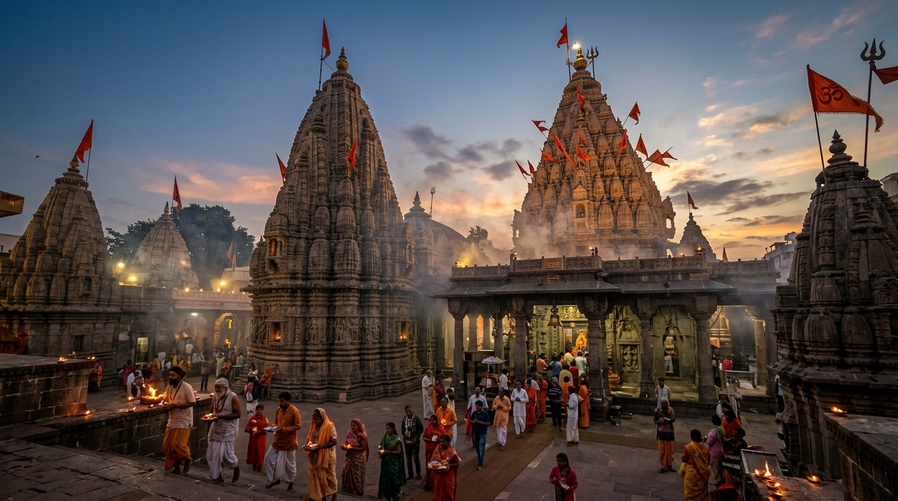
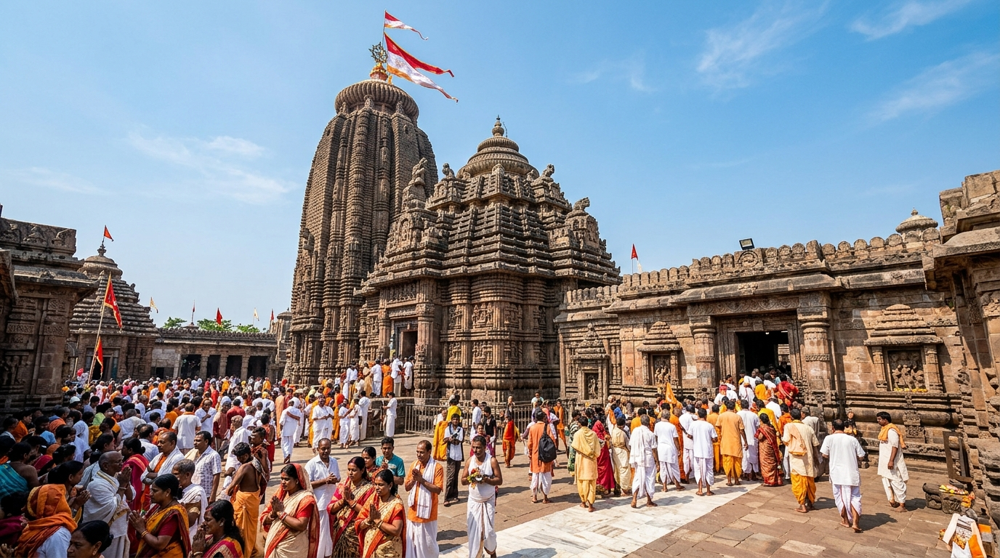
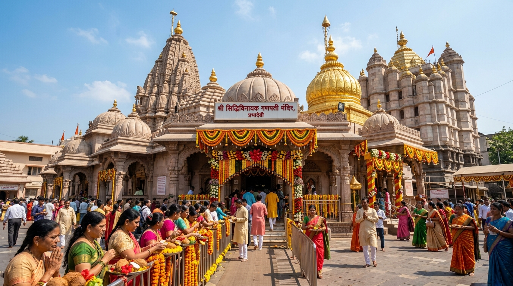
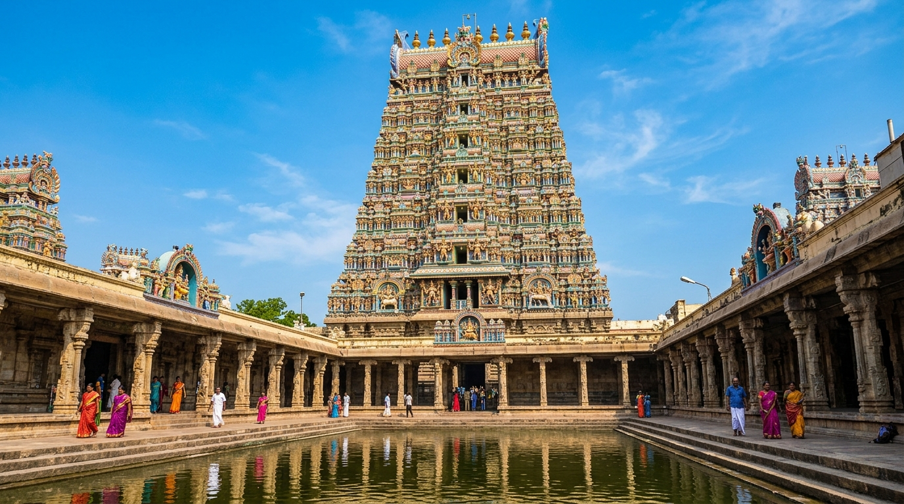
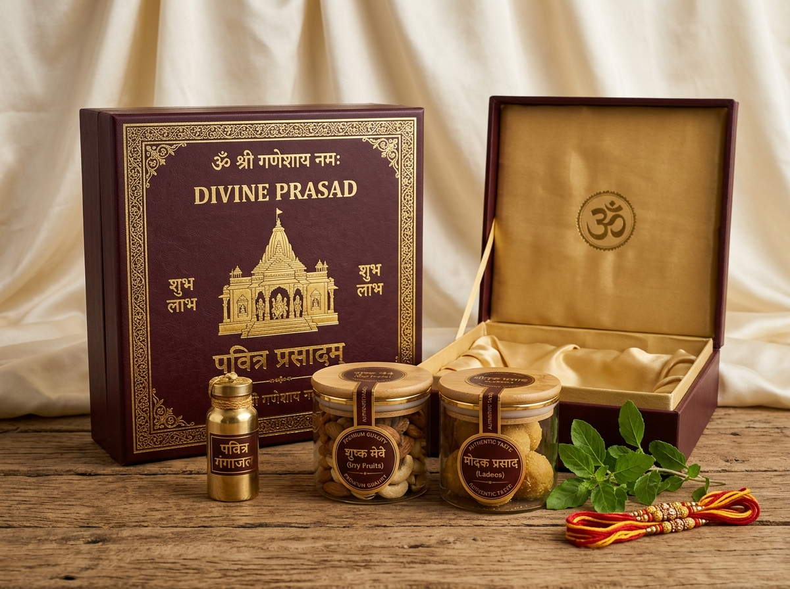
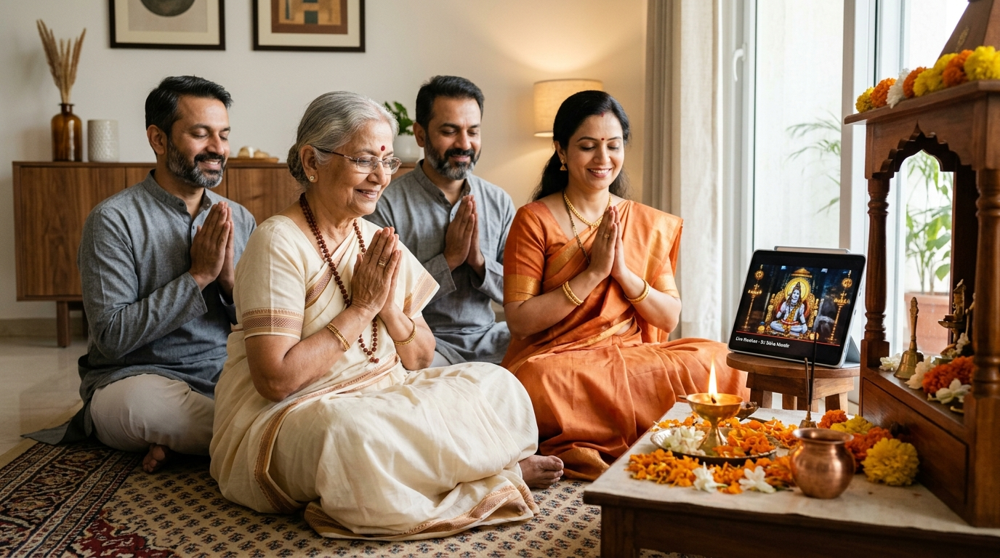

Experience live darshan, book personalized temple pujas, recite your sacred sankalp with certified priests, and receive consecrated prasad at your doorstep—wherever life takes you.
Every puja recites your Name, Gotra, and custom family sankalp.
Participate in real-time or watch private HD recordings afterward.
Authentic coordination with certified temple authorities & archakas.
Consecrated prasad, holy thread, and Gangajal at your doorstep.
Distance, work schedules, age, or living continents away shouldn’t disconnect you from your faith and sacred rituals.
Your ancestral kuldevta or holy dham may be thousands of kilometers away, making weekend visits impossible.
Demanding careers and immediate family commitments leave little time for long-distance pilgrimage travel.
For global Indians in the US, UK, UAE, or Singapore, staying meaningfully tied to temple traditions is a challenge.
Elderly parents or family members with mobility challenges often cannot endure strenuous temple queues.
A seamless digital bridge from your home shrine to India’s most revered spiritual sanctums.
Experience live sanctum darshan from participating temples during auspicious morning, evening, and aarti hours.
Book personalized pujas, Abhishek, and Havans performed strictly according to authentic Vedic rites by certified priests.
Provide your family's Name, Gotra, Nakshatra, and precise intentions. Verified priests chant your exact details during the ritual.
Join the live video stream where supported, or receive timestamped HD video recordings and sanctum photos after completion.
Receive consecrated non-perishable temple sweets, holy Raksha Sutra, sacred vibhuti, and pure Gangajal delivered safely to your address.
Support participating temple preservation, Annadanam (free community food), Gaushala seva, and restoration programs directly.
Discover and consult certified Vedic archakas for home ceremonies, horoscope matching, and auspicious muhurta planning.
Participate in grand seasonal offerings during Maha Shivratri, Navratri, Ganesh Utsav, and Diwali with thousands of fellow devotees.
Test how your devotion is personalized. Enter your family details to see how priests recite your sacred intention.
GHARSEPUJA VERIFIED DIGITAL VAULT
Four clear, transparent steps connecting your sacred intentions directly to the temple sanctum.
Select your revered temple, the specific seva or puja, and your auspicious date or festival.
Provide your family members' names, Gotra, birth stars, and the sacred purpose of the sankalp.
Join the live streaming puja from home, or receive a private high-definition video recording.
Get consecrated prasad, sacred thread, vibhuti, and pure Gangajal delivered safely to your home.
Experience sacred dhams, Jyotirlingas, and historic shrines through verified digital partnerships.




Consecrated rituals performed with personalized sankalp, complete transparency, and blessed prasad delivery.
Sacred abhishek of holy Shiva Linga with Panchamrit and bilva leaves for peace, health, and negative energy dispelling.
Potent Vedic mantra chanting dedicated to overcoming severe illnesses, physical hurdles, and granting long life.
Traditional auspicious katha for new home inaugurations, birthdays, anniversaries, and overall family prosperity.
Balances adverse planetary influences, mitigating dasha transitions, career setbacks, and health obstacles.
Invocations to Lord Ganesha to dissolve hurdles before new endeavors, jobs, businesses, or weddings.
For business expansion, economic stability, clearing loans, and welcoming perpetual abundance into the household.

Prasad is not just food; it is divine grace. We ensure the sanctity and purity of your prasad through hygienic packaging and swift express logistics.
Sealed brass/leak-proof containers retaining pure holy river water and blessed vibhuti.
Traditional dry fruits, panjiri, or besan laddoos prepared under strict temple hygiene.
Blessed Mauli thread sanctified during your specific family sankalp for protective grace.
When you book a seva remotely, you should know exactly what happened, who conducted it, and how your sankalp was fulfilled.
Every booking receives a reference token tracked from priest assignment to prasad dispatch.
Hear your family Gotra and intention clearly chanted in the audio/video record.
Receive high-definition video evidence with timestamp and temple sanctum verification.
Real-time courier tracking with tamper-proof seal confirmation for ultimate peace of mind.
Designed with deep respect for Indian families across generations and continents.

Maintain your spiritual rhythm even during hectic work weeks and business travel.
Sanctify birthdays, anniversaries, housewarmings, and career moves with temple blessings.
Experience the divine solace of darshan and seva without arduous journeys and temple stairs.
Preserve ancestral spiritual connections across time zones with effortless ease.
We empower temple administrators with modern digital tools to expand outreach, manage remote seva bookings, and fulfill prasad effortlessly.
Are you a temple trustee, administrator, or representative? Join our pilot partner program to bring your temple's pujas, darshan, and prasad to millions of respectful devotees worldwide while preserving ritual sanctum sanctity.
We are building the complete digital infrastructure for temple seva—connecting devotees with temples, certified archakas, and sacred experiences across the nation.
Respectful of tradition, powered by modern technology, engineered for trust.
We’re onboarding an authentic network of temples and verified archakas. Join our priority access list for early puja bookings and launch updates.
Namaste Devotee. Your digital priority token has been minted:
Honest, transparent answers about our services, sankalp process, and temple partnerships.
GharSePuja is an early-stage digital gateway platform connecting devotees with participating temples across India. We enable devotees to participate in authentic temple services remotely—from live sanctum darshan and personalized puja with proper sankalp to door-delivered blessed prasad.
Yes. In the Vedic tradition, pujas and Havans can be performed on behalf of the devotee by consecrated priests (archakas) via a personalized Sankalp (sacred resolution). By stating your Name, Gotra, and intention, the spiritual merit (phala) of the puja is consecrated directly to you and your family.
Transparency is our highest core value. You receive a timestamped high-definition recording and sanctum photos showing the priest clearly reciting your Name and Gotra during the Sankalp chanting, as well as a verifiable digital certificate with unique reference ID.
Live participation is available for supported pujas and participating temples. You will receive a private, high-security video link to join in real-time from your computer, tablet, or phone, allowing your entire family to follow along.
We work with dry, non-perishable consecrated prasad—such as traditional laddoos, dry fruit offerings, sacred vibhuti, holy raksha sutra, and airtight-sealed Gangajal. All prasad is dispatched via express courier immediately after the ritual under rigorous hygienic packaging.
We are currently onboarding selected temple partners across key spiritual centers (such as Varanasi, Ujjain, Gujarat, and Odisha) in phased pilot rollouts. Early access members get first notification as new temple integrations go live.
No. We do not make unverified claims. Only temples, trusts, and authorized archakas that have officially partnered with GharSePuja are represented on the platform. We work with temples, not around them.
Absolutely. Devotees in the USA, UK, UAE, Canada, and other countries can book pujas, attend live streams according to coordinated timings, and receive customs-compliant holy prasad shipments right to their international addresses.
Stay connected to your sacred traditions, wherever life takes you. Experience the peace of authentic temple rituals today.
Connect with our founders and onboarding team to discuss digital seva scheduling, transparent donation workflows, and prasad fulfillment.